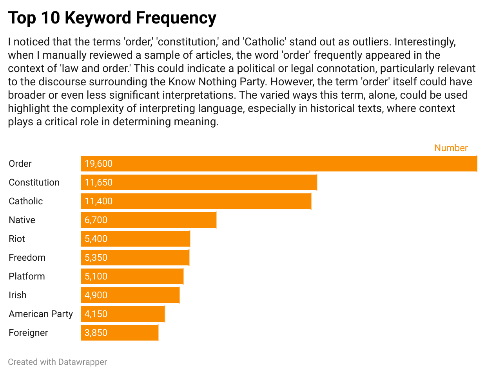
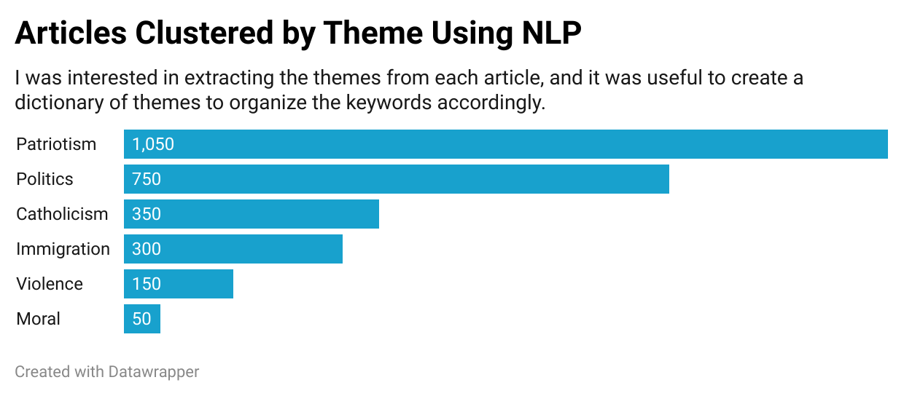

Unlike their mainly Protestant countrymen in previous decades, most of the Irish immigrants of this era were Catholic, and arrived in very destitute conditions. Sadly, many were not well received by native-born Americans, including their Scotch-Irish predecessors who feared their allegiance to the pope would subvert American culture. These new Irish immigrants, having fled a devastating famine, would make up half of all new immigrants in the U.S. over forty years. They often took low-paying, menial work and, due to discrimination and social exclusion, were relegated to urban slums. The perception that they were inherently prone to social problems like disease, violence, and alcoholism was often used to justify nativist rhetoric against them.
In this context, newspapers began to reflect specific fears, stereotypes, and anxieties that became central to the Know Nothing platform. Their populist rhetoric around immigration and Catholicism was well-documented in the press, where derogatory representations and harmful stereotypes helped to validate the demeaning treatment of the Irish immigrants. Considering the media's influence on shaping public perception, my goal was to explore how computational methods could be used to investigate this dynamic.

What words and themes could be elevated from press coverage of the era, and what insights might we glean from them? The U.S. Library of Congress Chronicling America API provides access to American historical newspapers which I scraped and retrieved a dataset of 3,000 articles that mentioned the Know Nothings, limiting the search to NY, MD, and MA newspapers from 1845–1855. I selected these states to contain the unimaginable sprawl of this project, and because of their historical relevance to Irish immigration. Most Irish immigrants entering the U.S. at the time either crossed the Canadian border or came through the East Coast ports of NYC and Boston. Baltimore also saw a large influx of Irish immigrants, and its political and cultural identity was split between Northern industrialism and Southern agrarianism, which uniquely shaped how immigrants were received.

I manually read a few articles about the Know Nothings and created a list of 43 relevant keywords. Then, I extracted their instances in each article and generated a word cloud.

I then created a dictionary of themes and assigned one to each article based on the extracted keywords.
